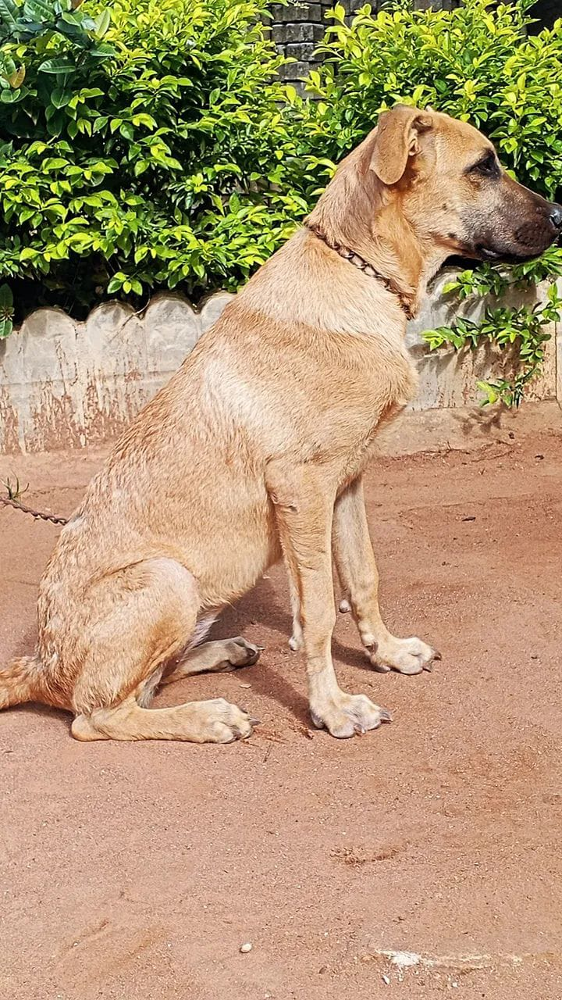
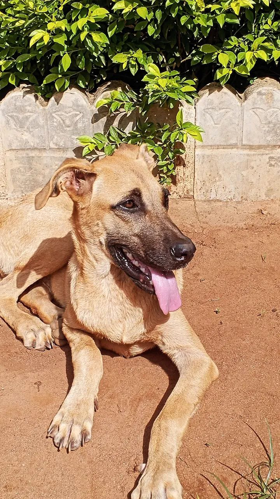
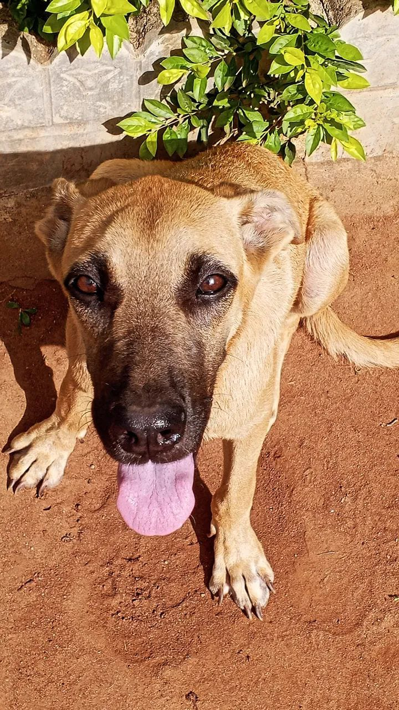
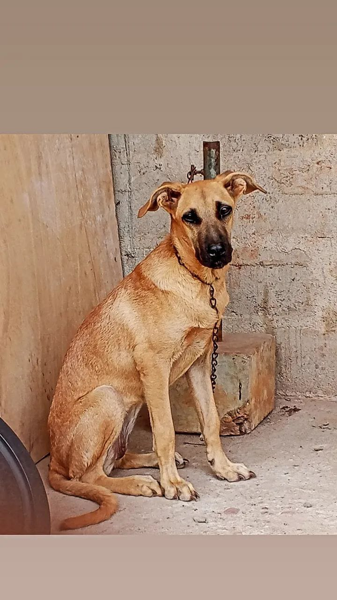
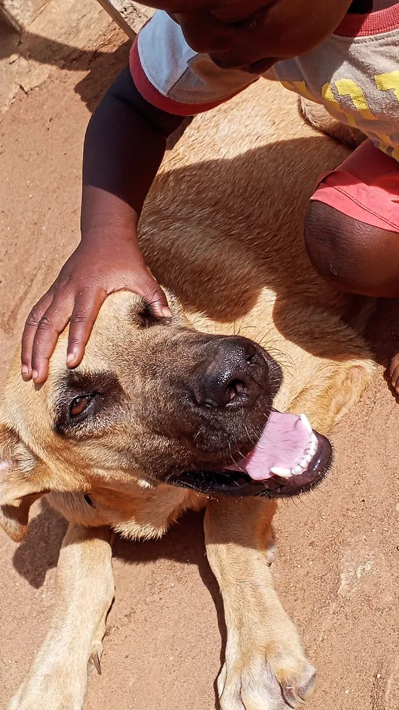

Alimentation
Un chien a besoin d'une alimentation complète et adaptée à son âge, sa taille et son activité. Demande conseil à un vétérinaire pour choisir les bons apports, avec de l'eau propre à volonté.
Conseils pour chiens
Nikè est une chienne d'un an, issue du croisement entre un Boerboel et un Berger allemand, deux grandes races. Très active, elle a de l'énergie à revendre et possède un tempérament affirmé, avec des traits de caractère hérités de ses deux origines.
Prendre soin d'un chien, c'est une responsabilité.
Nikè en images
Une compagne pleine d'énergie.

Une chienne attentive et observatrice.

Un moment de repos après l'activité.

Un regard vif et un caractère affirmé.

Une grande chienne qui a besoin de repères.

La complicité et la confiance se construisent.
Mes conseils
Touchez ou survolez une affiche pour la déplier.
Alimentation
Un chien a besoin d'une alimentation complète et adaptée à son âge, sa taille et son activité. Demande conseil à un vétérinaire pour choisir les bons apports, avec de l'eau propre à volonté.
Hygiène
Lave ton chien selon sa race, son pelage et ses besoins. Brosse-le régulièrement et surveille ses oreilles, ses griffes et l'état de sa peau.
Promenades
Un chien actif a besoin de sorties régulières et de stimulation. Utilise la laisse tant qu'il ne maîtrise pas correctement les consignes.
Éducation
L'éducation demande patience et constance. Un chien a besoin de repères, pas de violence. Des règles simples et positives favorisent son équilibre.
Sommeil
Offre-lui un espace propre, calme et confortable ainsi que de l'attention et de la bienveillance au quotidien.
Suivi santé
Ne néglige pas les vaccins, les vermifuges et le suivi vétérinaire. Les compléments ne doivent être donnés que sur recommandation d'un professionnel.
À retenir
Chaque chien a ses besoins. L'âge, la race, la taille, le comportement et l'état de santé de ton chien doivent guider les soins à lui apporter. En cas de doute ou de problème de santé, demande conseil à un vétérinaire.